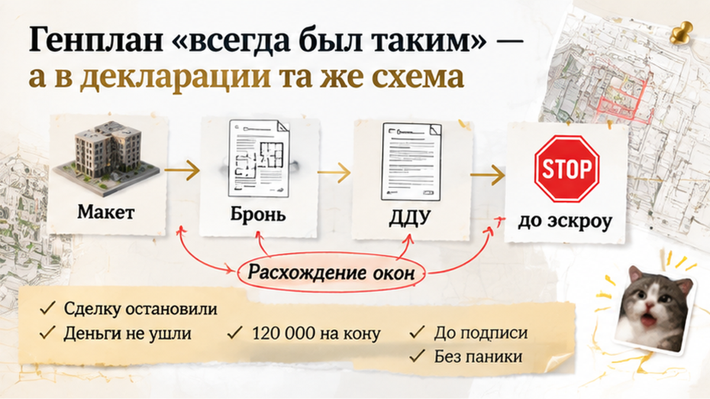
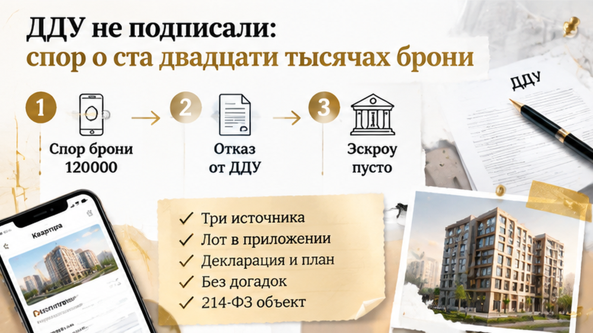

За пять дней до подписания ДДУ семья остановила сделку: вместо обещанного вида во двор в документах обнаружились окна на оживлённую улицу или магистраль, а 120 000 ₽ за бронь уже были внесены. Ипотеку одобрили, дату сделки назначили, но до эскроу деньги ещё не дошли. В офисе продаж секция на макете выглядела обращённой внутрь двора, и менеджер говорил, что родители и кухня будут смотреть на спокойную территорию без потока машин. Вечером родители открыли приложение к проекту договора и увидели другую ориентацию фасада. Оставалось пять дней, чтобы понять, какую квартиру семья действительно собиралась купить.
Я, Святослав Шакин, The Риэлтор из Тюмени, разбираю такие истории без рекламного тумана: что показывают в офисе и что в итоге закрепляют в документах. Полезные разборы новостроек — в Telegram и MAX.
Семья выбирала квартиру не только по цене и площади. Родителям было важно, чтобы детская и кухня выходили во внутренний двор, а не на дорогу, где с утра до вечера идут машины. На макете нужная секция выглядела обращённой внутрь территории. Менеджер подтвердил: окна будут смотреть именно туда.
После этого покупатели внесли 120 000 ₽ по соглашению о бронировании. Банк одобрил ипотеку, дату подписания договора долевого участия заранее наметили. Оставалось получить документы и перечислить деньги на эскроу — тот же этап, на котором в новостройках Тюмени иногда всплывают сроки и условия, как в истории, когда сдачу перенесли, а деньги на эскроу уже заморозили.
Но макет и разговор в офисе сами по себе не определяют квартиру, которую покупатель получит по ДДУ. Для этого нужно сопоставить конкретный лот: номер квартиры, секцию, этаж, поэтажный план, фасад и другие признаки. Если в приложении к договору указан лот с другой стороны здания, повторный просмотр красивого рендера спор не решит. Нужно смотреть документы.
Такой разрыв между словами менеджера и бумагами важен и при проверке проектной декларации. Покупателю важно отделить обещание в офисе от сведений, которые застройщик раскрыл до подписания.
Проект договора семья открыла вечером, когда до сделки оставалось пять дней. В приложении к нему и актуальной проектной документации родители увидели другую ориентацию секции и фасада. Выбранная квартира уже не выглядела квартирой «во двор»: по схеме окна выходили на оживлённую улицу или магистраль.
Покупатели попросили менеджера объяснить расхождение. Ответ был коротким: генплан «всегда был таким», а макет — всего лишь маркетинговый материал. Но главный вопрос остался: какую именно квартиру семья собиралась купить и что ей показывали до внесения денег за бронь?
По части 1 статьи 4 214-ФЗ объект долевого строительства определяется в ДДУ в соответствии с проектной документацией. Проще говоря, из договора должно быть понятно, какую конкретно квартиру получает покупатель. Поэтому направление окон проверяют по номеру квартиры, секции, поэтажному плану и фасаду. Если проект менялся, смотрят ещё и даты редакций — и то, как эти изменения отразили в проектной декларации.
Семья проверила схему в проектной декларации на ЕИСЖС. Там она совпадала с документами, а не с впечатлением от макета и разговора в офисе. Это ещё не означало автоматически, что застройщик нарушил закон: сначала нужно было понять, менялась ли проектная документация и когда.
Изменения проектной документации должны отражаться в декларации ежемесячно, не позднее 10-го числа, по правилам части 4 статьи 19 214-ФЗ. Поэтому важна история редакций: какая схема действовала раньше, какая появилась позже и что именно покупатель мог увидеть в момент бронирования.
В офисе семье ответили коротко: «Генплан всегда был таким. На макете просто показали идею двора». Но на актуальной схеме секция стояла иначе: окна выбранной квартиры выходили на оживлённую улицу или магистраль. Хотя вид во двор до этого называли одним из преимуществ.
В ЕИСЖС покупатели увидели ту же схему, что и в приложении к проектному договору. Здесь и проходит граница между красивой картинкой и документом: проектная документация показывает, какую квартиру человек получает по ДДУ, а макет и слова менеджера — как эту квартиру продавали. Иногда эти вещи совпадают. В этой истории — нет.
Но одного скриншота декларации мало. Нужно было понять, менялась ли проектная документация и когда именно: сравнить прежнюю и актуальную редакции, посмотреть даты и проверить, отражены ли изменения в декларации. По части 4 статьи 19 214-ФЗ такие изменения должны вноситься ежемесячно, не позднее 10-го числа.
Если документы не менялись, а на макете и в разговоре с менеджером с самого начала показывали другое, спор уже не о решении застройщика. Он о том, что именно обещали покупателю и чем это можно подтвердить: перепиской, рекламой, презентацией, материалами офиса или условиями бронирования.
С отделкой бывает так же. Обещание чистовой квартиры не заменяет характеристику в ДДУ. В одном из тюменских случаев это выяснилось только на приёмке: вместо обещанной чистовой покупатели увидели голые стены.
Поэтому семье стоило сохранить фотографию макета, лист с номером квартиры, переписку, презентацию, условия бронирования, скриншоты страницы проекта и редакцию декларации на дату проверки. Тогда разговор шёл бы не вокруг фразы «нам обещали двор», а вокруг конкретного расхождения по конкретному лоту.
К подписанию ДДУ семья не пришла. Деньги на эскроу не перечислили: покупатели не были готовы оформлять квартиру, характеристики которой расходились с тем, что им показывали при выборе. Одобрение ипотеки само по себе не обязывало их подписывать договор.
Главным вопросом стали 120 000 ₽, внесённые по соглашению о бронировании. Семья считала, что не должна терять эту сумму после обнаружения расхождения. В офисе ссылались на условия брони и на то, что ДДУ так и не был заключён.
Автоматически обещать возврат здесь нельзя. Бронь — отдельное соглашение. Нужно смотреть, какой лот в нём указан, когда и по какой причине прекращается бронь, в каких случаях деньги возвращают или удерживают и что считается отказом покупателя.
Если в соглашении есть только общая формулировка без номера квартиры и её характеристик, доказать расхождение сложнее. Поэтому семье были важны не только проект договора и декларация, но и материалы, которые она видела до оплаты: переписка, презентация, фотография макета и условия бронирования.
Нормы 214-ФЗ о расторжении ДДУ напрямую этот спор не решают: договора ещё нет. Сначала нужно установить, какие отношения возникли по брони, что именно обещали покупателю и можно ли подтвердить это документами.

Семья поставила сделку на паузу и начала обсуждать возврат брони. ДДУ не подписали, деньги на эскроу не перевели. Вопрос о 120 000 ₽ зависел от текста соглашения и от того, удастся ли связать обещание при продаже с конкретной квартирой.
Покупатели сохранили переписку, презентацию, фотографию макета, условия бронирования и доступные редакции проектной документации. Теперь спор можно было обсуждать предметно: не на уровне общего впечатления от офиса, а по конкретному лоту и конкретным документам.
Кто должен отвечать за такой разрыв — менеджер, застройщик или покупатель, который не проверил документы до внесения брони?

Проверять нужно не весь жилой комплекс сразу, а выбранную квартиру: номер, секцию, этаж и фасад. Сначала сопоставляют план продаж и приложение к ДДУ, затем смотрят поэтажный план, генплан и проектную документацию. Если сведения не совпадают, сделку лучше остановить до подписи и перечисления денег на эскроу.
| Что сверить | В офисе продаж | В ДДУ и проектной документации |
|---|---|---|
| Номер квартиры и секция | Квартира выбрана на плане продаж или в презентации. | Номер должен совпадать в приложении к ДДУ, на поэтажном плане и в документах по корпусу. |
| Направление окон | На рендере могут быть двор, зелень или детская площадка. | Проверяются фасад, сторона света и направление окон по плану и проектной документации. |
| Что находится перед фасадом | Макет может показывать только благоустройство внутри участка. | Смотрят генплан, дороги, проезды и соседние объекты, если эти сведения доступны. |
| Изменения проекта | Дата макета часто не указана, а менеджер называет его актуальным. | Сравниваются редакции декларации, даты изменений и доступная проектная документация. |
| Условия бронирования | Фиксируются сумма 120 000 ₽ и выбранная квартира. | В соглашении ищут основания возврата или удержания денег, сроки и порядок прекращения брони. |
Проектную декларацию можно открыть через ЕИСЖС. Но её недостаточно читать отдельно от приложения к ДДУ: сведения по дому нужно сопоставить с документами именно по выбранной квартире. Историю редакций также важно сравнить с тем, что покупатель видел в офисе.
Если обещание из офиса расходится с договором, спор лучше разбирать до оплаты. Похожую логику можно увидеть в истории, где обещание чистовой отделки не заменило условие ДДУ. А сведения по проекту полезно сопоставлять с раскрытыми документами, как в истории с землёй под жилой комплекс.
Семья остановила сделку не потому, что любой вид на улицу неприемлем. Она просто не стала принимать решение по одной картинке, пока документы оставались непроверенными. Пять дней до ДДУ дали возможность не переводить деньги на эскроу вслепую и отдельно разобраться с условиями бронирования.
Если перед ДДУ картинка из офиса не совпала с проектом, такой вопрос лучше разобрать до подписи и до эскроу — я подключаюсь к делу до аванса. Напишите в Telegram или MAX — по документам конкретной ситуации.
Макет помогает представить будущий дом. Решение принимают по приложению к ДДУ, поэтажному плану и проектной декларации. Такая проверка не убирает все вопросы, но сохраняет возможность остановиться до сделки, а не выяснять детали после передачи квартиры.